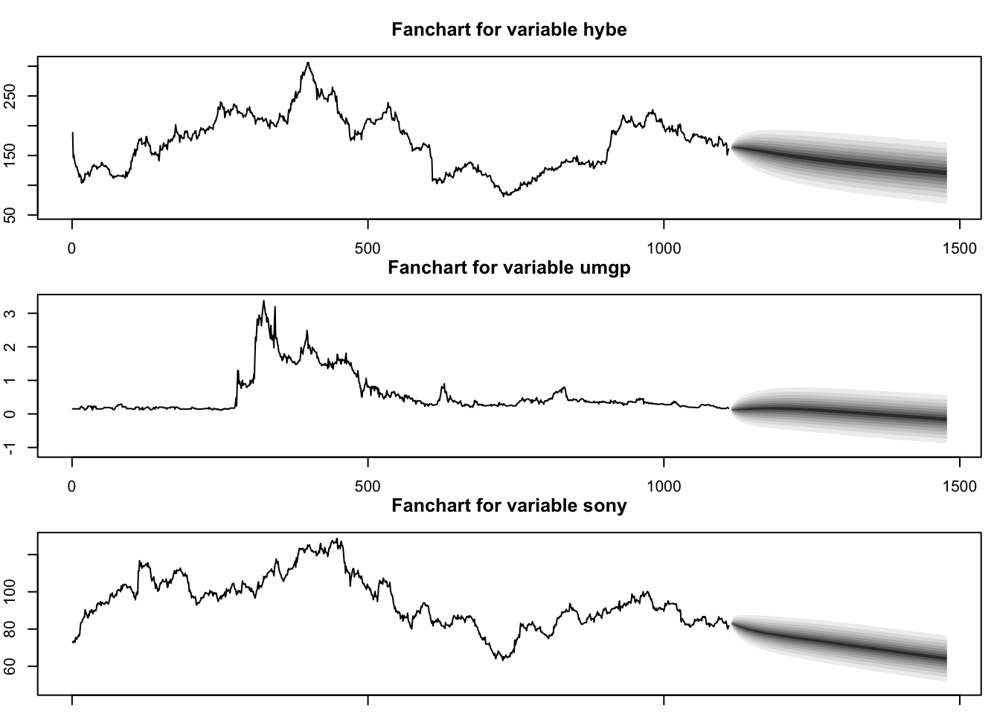
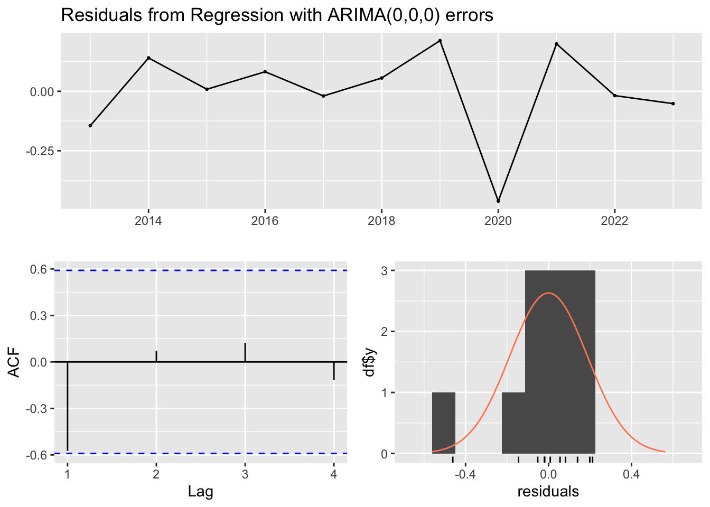
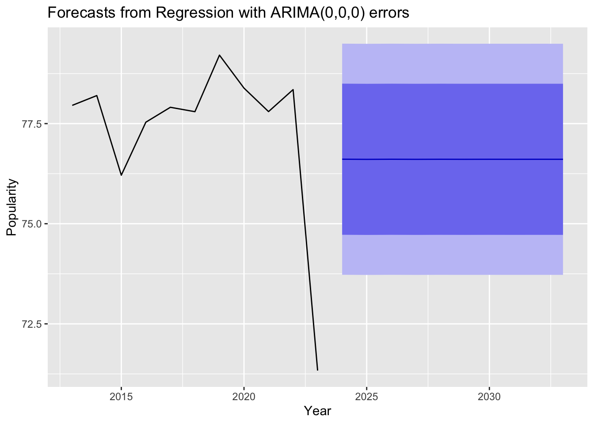

In order to understand the relationships between the Western Music industry and KPOP, we must take a look at their relationships between the artists. Focusing on KPOP, the biggest record label as of 2023 within the KPOP music industry is HYBE, now an international music company housing the biggest KPOP group, BTS. However, the other notable groups which we’ll be focusing on are EXO, Twice, and Black Pink, all of which are signed to other record labels known as SM, JYP, and YG respectfully. In terms of sales and popularity, BTS seems to be far above the other noted groups in their reach into the western music industry, especially of of recent with their total of 5 Grammy nominations “BTS | Artist” (2022). Thus, we will use a an ARIMAX model in order to discover what the relationship between other KPOP groups have with BTS and forecast the stock prices of these record labels using this information.
The next relationship we’ll analyze is between HYBE and the Western record labels Universal Music and Warner music. These two massive conglomerates make up the majority of the music industry within the west. However, with the recent merger of HYBE with Ithaca Holdings in 2021, there is reason to believe there is now overlap between HYBE and the western industry. Thus, we’ll see Universal Music Group and Warner’s relationship on HYBE and whether it’s significant.
Lastly, we’ll take a look at the relationship between globalization and tourism inbound in Korea in order to see whether foreign travel into Korea has a direct correlation within cultural globalization worldwide. This allows us to better understand the significance of KPOP and Korean culture onto other countries, specifically the western market and music industry.
Key Questions:
What is the relationship between KPOP groups?
What is the relationship between HYBE and the Western industry?
What is the relationship between cultural globalization and Korean tourism?
Can musical characteristics be used to predict the popularity of KPOP?
Can musical characteristics be used to predict the popularity of western music?
(1) The KPOP Record Labels - VAR:
Firstly, let’s gather the stock data for HYBE, SM Entertainment, YG, and JYP. Once gathered, we will be cleaning the data in order to impute weekends or holidays throughout the year where the stock market is closed.
Data Collection
options("getSymbols.warning4.0"=FALSE)options("getSymbols.yahoo.warning"=FALSE)tickers =c("UMGP", "SONY", "352820.KS", "041510.KQ", '122870.KQ', '035900.KQ')for (i in tickers){getSymbols(i, from ="2000-01-01", to ="2023-11-01")}UMGP <-data.frame(UMGP$UMGP.Adjusted)UMGP <- UMGP %>%rownames_to_column(var ="Date") %>%mutate(Date =as.Date(Date)) %>%rename(UMGP_Price = UMGP.Adjusted)start_date <-as.Date(min(UMGP$Date)) end_date <-as.Date(max(UMGP$Date)) date_range <-seq(start_date, end_date, by ="1 day")date_dataset <-data.frame(Date = date_range)UMGP <-merge(UMGP, date_dataset, by ='Date', all =TRUE)df_na_rows <- UMGP[which(rowSums(is.na(UMGP)) >0),]df_na_cols <- UMGP[, which(colSums(is.na(UMGP)) >0)]imputed_time_series <-na_ma(UMGP, k =4, weighting ="exponential")UMGP <-data.frame(imputed_time_series)#---SONY <-data.frame(SONY$SONY.Adjusted)SONY <- SONY %>%rownames_to_column(var ="Date") %>%mutate(Date =as.Date(Date)) %>%rename(SONY_Price = SONY.Adjusted)start_date <-as.Date(min(SONY$Date)) end_date <-as.Date(max(SONY$Date)) date_range <-seq(start_date, end_date, by ="1 day")date_dataset <-data.frame(Date = date_range)SONY <-merge(SONY, date_dataset, by ='Date', all =TRUE)df_na_rows <- SONY[which(rowSums(is.na(SONY)) >0),]df_na_cols <- SONY[, which(colSums(is.na(SONY)) >0)]imputed_time_series <-na_ma(SONY, k =4, weighting ="exponential")SONY <-data.frame(imputed_time_series)#---HYBE <-data.frame(`352820.KS`$`352820.KS.Adjusted`)HYBE <- HYBE %>%rownames_to_column(var ="Date") %>%mutate(Date =as.Date(Date)) %>%rename(HYBE_Price = X352820.KS.Adjusted) %>%mutate(HYBE_Price = HYBE_Price/1352.60)start_date <-as.Date(min(HYBE$Date)) end_date <-as.Date(max(HYBE$Date)) date_range <-seq(start_date, end_date, by ="1 day")date_dataset <-data.frame(Date = date_range)HYBE <-merge(HYBE, date_dataset, by ='Date', all =TRUE)df_na_rows <- HYBE[which(rowSums(is.na(HYBE)) >0),]df_na_cols <- HYBE[, which(colSums(is.na(HYBE)) >0)]imputed_time_series <-na_ma(HYBE, k =4, weighting ="exponential")HYBE <-data.frame(imputed_time_series)#--- SM <-data.frame(`041510.KQ`$`041510.KQ.Adjusted`)SM <- SM %>%rownames_to_column(var ="Date") %>%mutate(Date =as.Date(Date)) %>%rename(SM_Price = X041510.KQ.Adjusted) %>%mutate(SM_Price = SM_Price/1352.60)start_date <-as.Date(min(SM$Date)) end_date <-as.Date(max(SM$Date)) date_range <-seq(start_date, end_date, by ="1 day")date_dataset <-data.frame(Date = date_range)SM <-merge(SM, date_dataset, by ='Date', all =TRUE)df_na_rows <- SM[which(rowSums(is.na(SM)) >0),]df_na_cols <- SM[, which(colSums(is.na(SM)) >0)]imputed_time_series <-na_ma(SM, k =4, weighting ="exponential")SM <-data.frame(imputed_time_series)#---YG <-data.frame(`122870.KQ`$`122870.KQ.Adjusted`)YG <- YG %>%rownames_to_column(var ="Date") %>%mutate(Date =as.Date(Date)) %>%rename(YG_Price = X122870.KQ.Adjusted) %>%mutate(YG_Price = YG_Price/1352.60)start_date <-as.Date(min(YG$Date)) end_date <-as.Date(max(YG$Date)) date_range <-seq(start_date, end_date, by ="1 day")date_dataset <-data.frame(Date = date_range)YG <-merge(YG, date_dataset, by ='Date', all =TRUE)df_na_rows <- YG[which(rowSums(is.na(YG)) >0),]df_na_cols <- YG[, which(colSums(is.na(YG)) >0)]imputed_time_series <-na_ma(YG, k =4, weighting ="exponential")YG <-data.frame(imputed_time_series)#---JYP <-data.frame(`035900.KQ`$`035900.KQ.Adjusted`)JYP <- JYP %>%rownames_to_column(var ="Date") %>%mutate(Date =as.Date(Date)) %>%rename(JYP_Price = X035900.KQ.Adjusted) %>%mutate(JYP_Price = JYP_Price/1352.60)start_date <-as.Date(min(JYP$Date)) end_date <-as.Date(max(JYP$Date)) date_range <-seq(start_date, end_date, by ="1 day")date_dataset <-data.frame(Date = date_range)JYP <-merge(JYP, date_dataset, by ='Date', all =TRUE)df_na_rows <- JYP[which(rowSums(is.na(JYP)) >0),]df_na_cols <- JYP[, which(colSums(is.na(JYP)) >0)]imputed_time_series <-na_ma(JYP, k =4, weighting ="exponential")JYP <-data.frame(imputed_time_series)stock_dataframes <-list(UMGP, SONY, HYBE, SM, YG, JYP)stock_names <-list("UMGP", "SONY", "HYBE", "SM", "YG", "JYP")#Creating a subset of only Korean Record label stock datadf <- HYBE %>%left_join(SM, by ='Date') %>%left_join(YG, by ='Date') %>%left_join(JYP, by ='Date')
As we previously mentioned in data visualization, HYBE seems to have a much larger impact in comparison to the other three record companies on the stock market overall. However, what we can see is that several of the positive trends shown through all stock prices, thus we can note some initial correlation. Let’s continue with the VAR model to see what the multivariate relationship is.
We can see that based on the residual standard error and number of significant variables in the model, we can say that the model when p=5 performs better than when p=1. We can also notice that while HYBE and SM don’t see to have much correlation with other agencies, JYP and YG seem to be heavily correlated with each other and SM.
Thus, before we continue with the model, we will also verify through a CV test.
The results from the CV test show that a model of p = 2 is the best at predicting HYBE stock prices in relation to SM, YG, and JYP. Since cross validation is a more accurate model selection technique, we will create both models where p=5,2.
Code
folds =5best_model <-NULLbest_performance <-Inffold_s <-floor(nrow(df_ts)/folds)for(fold in1:folds){ start <- (fold-1)*fold_s+1 end <- fold*fold_s train_model <- df_ts[-(start:end), ] test_model <- df_ts[start:end, ] sel <-VARselect(train_model, lag.max =10, type ="both") best_lag <- sel$selection[1] fit <- vars::VAR(train_model, p=best_lag, type="both", season =NULL, exog =NULL) h <-nrow(test_model) pred <-predict(fit, n.ahead = h) pred_hybe <- pred$fcst$hybe[,1] mse <-mean((pred_hybe - test_model[, "hybe"])^2)if(mse < best_performance){ best_model <- fit best_performance <- mse }}print("The best model is: ")
Based on the p-values, we can say that the model where p=2 has a much lower p-value, indicating that there is no serial correlation within the model. Thus, we will choose this model to forecast HYBE prices in relation to other KPOP agencies.
Code
var_model_1 <- vars::VAR(df_ts, p=2, type="both", season =NULL, exog =NULL)gu.serial <-serial.test(var_model_1, lags.pt =12, type ="PT.asymptotic") gu.serial
Portmanteau Test (asymptotic)
data: Residuals of VAR object var_model_1
Chi-squared = 268.25, df = 160, p-value = 1.768e-07
Code
plot(gu.serial, names ="hybe")
Code
plot(gu.serial, names ="sm")
Code
plot(gu.serial, names ="jyp")
Code
plot(gu.serial, names ="yg")
Code
#--var_model_2 <- vars::VAR(df_ts, p=5, type="both", season =NULL, exog =NULL)gu.serial <-serial.test(var_model_2, lags.pt =12, type ="PT.asymptotic") gu.serial
Portmanteau Test (asymptotic)
data: Residuals of VAR object var_model_2
Chi-squared = 161.03, df = 112, p-value = 0.001666
Code
plot(gu.serial, names ="hybe")
Code
plot(gu.serial, names ="sm")
Code
plot(gu.serial, names ="jyp")
Code
plot(gu.serial, names ="yg")
Code
par(mar=c(1,2,3,1))var_model_1 <- vars::VAR(df_ts, p=2, type="both", season =NULL, exog =NULL)fit.pr <-predict(var_model_1, n.ahead =365, ci =0.95)fanchart(fit.pr)
Thus, from our forecasting, we can see that SM, JYP, and YG all are similar in that the so a contextually upward trend of similar magnitude. Additionally, we see a downward trend for HYBE in the next year with a larger variance within the prediction. This could mean that, if HYBE were to proceed with business decisions based on KPOP record labels, they would face a downward trend in their stock prices.
(2) KPOP and the Western industry - VAR:
Similarly, we’ll take look now at how or if the Western music industry has had a relation with the growth and sucess of HYBE entertainment. As we see the blend of the two industries within HYBE’s artist roster, we will also need to use the techinques of VAR models to identify correlations between all three entertainment companies in order to properly forecast all three.
We’ll follow the same steps as before the get some initial p values from VARselect().
From an initial visualization, it doesn’t appear that there is correlation between any of these stock prices, simply because the trends are so vastly different. HYBE, compared to the other stock prices, seems much more volatile, which makes it difficult to predict its forecasted prices. Thus, we’ll continue with the VAR model to work on forecasting.
Code
#Creating a subset of only Korean Record label stock datadf2 <- HYBE %>%left_join(UMGP, by ='Date') %>%left_join(SONY, by ='Date') %>%drop_na()hybe <-ts(df2$HYBE_Price, start =as.Date('2020-10-15'), freq =365.25)umgp <-ts(df2$UMGP_Price, start =as.Date('2020-10-15'), freq =365.25)sony <-ts(df2$SONY_Price, start =as.Date('2020-10-15'), freq =365.25)df2_ts <-cbind(hybe, umgp, sony)colnames(df2_ts) <-c("hybe", "umgp", "sony")autoplot(df2_ts)
Here, we can see that VARselect() chose p=5,1, similar to the relation between KPOP agencies. Let’s continue by analyzing the residuals squared errors.
From the residual squared errors and significance values, we can see that both models are very similar. The error on UMGP and SONY are very low, however the error for HYBE is larger at at approximately 4. Thus, we’ll continue model selection through cross validation.
Code
summary(vars::VAR(df2_ts, p=1, type='both'))
VAR Estimation Results:
=========================
Endogenous variables: hybe, umgp, sony
Deterministic variables: both
Sample size: 1111
Log Likelihood: -3972.286
Roots of the characteristic polynomial:
0.9963 0.9735 0.9735
Call:
vars::VAR(y = df2_ts, p = 1, type = "both")
Estimation results for equation hybe:
=====================================
hybe = hybe.l1 + umgp.l1 + sony.l1 + const + trend
Estimate Std. Error t value Pr(>|t|)
hybe.l1 0.9775055 0.0049785 196.345 < 2e-16 ***
umgp.l1 -0.1810678 0.2740135 -0.661 0.508879
sony.l1 0.0904280 0.0200664 4.506 7.29e-06 ***
const -5.4559803 1.5408192 -3.541 0.000415 ***
trend 0.0015295 0.0005461 2.800 0.005192 **
---
Signif. codes: 0 '***' 0.001 '**' 0.01 '*' 0.05 '.' 0.1 ' ' 1
Residual standard error: 4.506 on 1106 degrees of freedom
Multiple R-Squared: 0.9907, Adjusted R-squared: 0.9907
F-statistic: 2.947e+04 on 4 and 1106 DF, p-value: < 2.2e-16
Estimation results for equation umgp:
=====================================
umgp = hybe.l1 + umgp.l1 + sony.l1 + const + trend
Estimate Std. Error t value Pr(>|t|)
hybe.l1 2.330e-04 9.114e-05 2.557 0.0107 *
umgp.l1 9.888e-01 5.016e-03 197.115 <2e-16 ***
sony.l1 -6.789e-04 3.674e-04 -1.848 0.0648 .
const 4.078e-02 2.821e-02 1.446 0.1486
trend -1.835e-05 9.999e-06 -1.836 0.0667 .
---
Signif. codes: 0 '***' 0.001 '**' 0.01 '*' 0.05 '.' 0.1 ' ' 1
Residual standard error: 0.0825 on 1106 degrees of freedom
Multiple R-Squared: 0.9821, Adjusted R-squared: 0.982
F-statistic: 1.518e+04 on 4 and 1106 DF, p-value: < 2.2e-16
Estimation results for equation sony:
=====================================
sony = hybe.l1 + umgp.l1 + sony.l1 + const + trend
Estimate Std. Error t value Pr(>|t|)
hybe.l1 0.0020771 0.0015281 1.359 0.17433
umgp.l1 0.2268382 0.0841031 2.697 0.00710 **
sony.l1 0.9767838 0.0061590 158.595 < 2e-16 ***
const 2.0234611 0.4729243 4.279 2.04e-05 ***
trend -0.0005467 0.0001676 -3.261 0.00114 **
---
Signif. codes: 0 '***' 0.001 '**' 0.01 '*' 0.05 '.' 0.1 ' ' 1
Residual standard error: 1.383 on 1106 degrees of freedom
Multiple R-Squared: 0.9899, Adjusted R-squared: 0.9899
F-statistic: 2.72e+04 on 4 and 1106 DF, p-value: < 2.2e-16
Covariance matrix of residuals:
hybe umgp sony
hybe 20.308515 -0.006463 0.796670
umgp -0.006463 0.006807 0.005349
sony 0.796670 0.005349 1.913190
Correlation matrix of residuals:
hybe umgp sony
hybe 1.00000 -0.01738 0.12781
umgp -0.01738 1.00000 0.04688
sony 0.12781 0.04688 1.00000
Based on the p-values and ACF plots of the residuals, the model where p=5 seems to be the best model for forecasting. the residuals are not correlated and the p-value is significant as it is 0.01918 < 0.05.
Code
var_model_1 <- vars::VAR(df2_ts, p=1, type="both", season =NULL, exog =NULL)gu.serial <-serial.test(var_model_1, lags.pt =12, type ="PT.asymptotic") gu.serial
Portmanteau Test (asymptotic)
data: Residuals of VAR object var_model_1
Chi-squared = 274.17, df = 99, p-value < 2.2e-16
Code
plot(gu.serial, names ="hybe")
Code
plot(gu.serial, names ="umgp")
Code
plot(gu.serial, names ="sony")
Code
#--var_model_2 <- vars::VAR(df2_ts, p=5, type="both", season =NULL, exog =NULL)gu.serial <-serial.test(var_model_2, lags.pt =12, type ="PT.asymptotic") gu.serial
Portmanteau Test (asymptotic)
data: Residuals of VAR object var_model_2
Chi-squared = 90.726, df = 63, p-value = 0.01265
Code
plot(gu.serial, names ="hybe")
Code
plot(gu.serial, names ="umgp")
Code
plot(gu.serial, names ="sony")
Code
#--var_model_3 <- vars::VAR(df2_ts, p=8, type="both", season =NULL, exog =NULL)gu.serial <-serial.test(var_model_3, lags.pt =12, type ="PT.asymptotic") gu.serial
Portmanteau Test (asymptotic)
data: Residuals of VAR object var_model_3
Chi-squared = 55.819, df = 36, p-value = 0.01863
Code
plot(gu.serial, names ="hybe")
Code
plot(gu.serial, names ="umgp")
Code
plot(gu.serial, names ="sony")
Code
par(mar=c(1,2,3,1))var_model_1 <- vars::VAR(df2_ts, p=5, type="both", season =NULL, exog =NULL)fit.pr <-predict(var_model_1, n.ahead =365, ci =0.95)fanchart(fit.pr)

From this forecasting into the next year, we can see a strong negative trend for both HYBE and SONY, while UMGP’s stock price remains approximately constant. This prediction is similar to what we found from the previous model, such that HYBE will be experiencing a downward trend in prices for the upcoming year. This may be due to a number of reasons, however, most notably would be that their most successful artist, BTS, are continuing their hiatus as the members of the group complete their mandatory military service in South Korea.
Knowing this downward trend in the stock prices of the biggest performing record music agency, we may start to see a downward shift in KPOP among investors globally. Thus, we may need to discuss the direction of cultural globalization in relation to South Korea.
(3) - Foreign tourism in Korea on Cultural Globalization in the USA
Let’s see if the cultural globalization index in relation to tourism in South Korea will be trending downward in relation to our previous forecasting.
We’ll combine the globalization index data from KOF with the South Korean tourism data from Statistica.
As discussed previously, we will be modeling the cultural globalization index quantified by KOF within the United States in conjunction with tourism with South Korea throughout the 21st century. As we are focusing on KPOP’s influence within the United States, an integral part of globalization and cultural exchange is through tourism. Thus, looking at the relationship between tourism into South Korea and global culture in the United States will further help to understand this exchange in culture.
From the graph above, we can see a similar positive trend between both the globalization index and tourists entering South Korea. However, tourism takes a sharp downward trend in 2020. This is, of course, due to the COVID-19 global pandemic that prevented all travel into South Korea from foreigners. Since this data point is an anomaly to determine cultural trends, will continue this model without 2020.
Code
global_ts <-ts(df3, start =2000, frequency =1)autoplot(global_ts[,c(2:3)], facets=TRUE) +xlab("Year") +ylab("") +ggtitle("Cultural Globalization in USA and Tourism in South Korea")
Now, let’s move on with the ARIMAX/ARMAX model. First, we’ll create a model using auto.arima().
Based on the summary statistics of the model created, auto.arima() created the model ARMA(2,0). Additionally, there is no cross correlation in the residuals and the p-value based in the Ljung-Box test is significant.
Code
fit <-auto.arima(global_ts[, "KOFCuGIdf"], xreg = global_ts[, "tourists"])summary(fit)
Series: global_ts[, "KOFCuGIdf"]
Regression with ARIMA(2,0,0) errors
Coefficients:
ar1 ar2 intercept xreg
1.6838 -0.7370 87.7759 0
s.e. 0.1365 0.1434 0.4453 0
sigma^2 = 2.666: log likelihood = -38.14
AIC=86.28 AICc=90.57 BIC=91.26
Training set error measures:
ME RMSE MAE MPE MAPE MASE ACF1
Training set 0.2527717 1.460494 1.089386 0.2644077 1.265622 0.9198188 0.1042156
Code
checkresiduals(fit)
Ljung-Box test
data: Residuals from Regression with ARIMA(2,0,0) errors
Q* = 7.4991, df = 3, p-value = 0.05758
Model df: 2. Total lags used: 5
We’ll move now to find the ARMAX model manually. Let’s start by taking creating a regression model of tourism on cultural globalization. Using that model, we’ll take the residuals and test multiple Arima models in order to find the one with the lowest AIC and BIC values. From there, after analyzing the residuals and significance of the variables, we’ll validate the model through cross validation.
From the residuals, we can see that there is no cross correlation between the residuals within the ACF plot. Thus, we can move on to manually simulating ARMA models, since we do not need to difference the data.
From the manual process, we can see the models produced with the lowest AIC and BIC values are ARMA(2,2) and ARMA(1,0).
Code
df3$tourists <-ts(df3$tourists, start=2000, frequency =1)df3$KOFCuGIdf <-ts(df3$KOFCuGIdf, start=2000, frequency =1)############# First fit the linear model##########fit.reg <-lm(KOFCuGIdf ~ tourists, data = df3)summary(fit.reg)
Call:
lm(formula = KOFCuGIdf ~ tourists, data = df3)
Residuals:
Min 1Q Median 3Q Max
-9.2468 -4.0753 0.9324 3.8493 8.2528
Coefficients:
Estimate Std. Error t value Pr(>|t|)
(Intercept) 7.783e+01 3.063e+00 25.41 1.5e-15 ***
tourists 1.202e-06 2.918e-07 4.12 0.000644 ***
---
Signif. codes: 0 '***' 0.001 '**' 0.01 '*' 0.05 '.' 0.1 ' ' 1
Residual standard error: 5.468 on 18 degrees of freedom
Multiple R-squared: 0.4853, Adjusted R-squared: 0.4567
F-statistic: 16.97 on 1 and 18 DF, p-value: 0.0006436
Code
res.fit<-ts(residuals(fit.reg), start=2000, frequency =1)ggAcf(res.fit)
p d q AIC BIC AICc
13 2 0 2 104.8959 111.866 114.2292
Code
output[which.min(output$BIC),]
p d q AIC BIC AICc
6 1 0 0 106.7209 110.7039 109.3876
Code
output[which.min(output$AICc),]
p d q AIC BIC AICc
6 1 0 0 106.7209 110.7039 109.3876
From the following residual plots, we can say that model ARMA(1,0) is the better of the two models due to the lack of cross correlation between the residuals. However, we’ll move onto cross validation in order to determine which of the ARMAX models are the best for forecasting.
Code
capture.output(sarima(res.fit, 1,0,0))
[1] "initial value 1.585318 "
[2] "iter 2 value 1.000819"
[3] "iter 3 value 0.979873"
[4] "iter 4 value 0.971786"
[5] "iter 5 value 0.970922"
[6] "iter 6 value 0.970615"
[7] "iter 7 value 0.970607"
[8] "iter 8 value 0.970607"
[9] "iter 8 value 0.970607"
[10] "iter 8 value 0.970607"
[11] "final value 0.970607 "
[12] "converged"
[13] "initial value 1.116539 "
[14] "iter 2 value 1.064095"
[15] "iter 3 value 1.062560"
[16] "iter 4 value 1.061681"
[17] "iter 5 value 1.061650"
[18] "iter 6 value 1.061650"
[19] "iter 6 value 1.061650"
[20] "final value 1.061650 "
[21] "converged"
[22] "$fit"
[23] ""
[24] "Call:"
[25] "arima(x = xdata, order = c(p, d, q), seasonal = list(order = c(P, D, Q), period = S), "
[26] " xreg = xmean, include.mean = FALSE, transform.pars = trans, fixed = fixed, "
[27] " optim.control = list(trace = trc, REPORT = 1, reltol = tol))"
[28] ""
[29] "Coefficients:"
[30] " ar1 xmean"
[31] " 0.8652 -2.5386"
[32] "s.e. 0.1038 3.8694"
[33] ""
[34] "sigma^2 estimated as 7.801: log likelihood = -49.61, aic = 105.22"
[35] ""
[36] "$degrees_of_freedom"
[37] "[1] 18"
[38] ""
[39] "$ttable"
[40] " Estimate SE t.value p.value"
[41] "ar1 0.8652 0.1038 8.3328 0.0000"
[42] "xmean -2.5386 3.8694 -0.6561 0.5201"
[43] ""
[44] "$AIC"
[45] "[1] 5.261176"
[46] ""
[47] "$AICc"
[48] "[1] 5.29647"
[49] ""
[50] "$BIC"
[51] "[1] 5.410536"
[52] ""
Code
capture.output(sarima(res.fit, 2,0,2))
[1] "initial value 1.553778 "
[2] "iter 2 value 1.430949"
[3] "iter 3 value 1.042676"
[4] "iter 4 value 0.993029"
[5] "iter 5 value 0.974081"
[6] "iter 6 value 0.956070"
[7] "iter 7 value 0.949449"
[8] "iter 8 value 0.944797"
[9] "iter 9 value 0.942595"
[10] "iter 10 value 0.941319"
[11] "iter 11 value 0.940887"
[12] "iter 12 value 0.940866"
[13] "iter 13 value 0.940866"
[14] "iter 14 value 0.940865"
[15] "iter 15 value 0.940862"
[16] "iter 16 value 0.940853"
[17] "iter 17 value 0.940845"
[18] "iter 18 value 0.940830"
[19] "iter 19 value 0.940820"
[20] "iter 20 value 0.940818"
[21] "iter 21 value 0.940816"
[22] "iter 22 value 0.940816"
[23] "iter 22 value 0.940816"
[24] "iter 22 value 0.940816"
[25] "final value 0.940816 "
[26] "converged"
[27] "initial value 1.014365 "
[28] "iter 2 value 1.000713"
[29] "iter 3 value 0.998434"
[30] "iter 4 value 0.997970"
[31] "iter 5 value 0.997732"
[32] "iter 6 value 0.997580"
[33] "iter 7 value 0.997379"
[34] "iter 8 value 0.997048"
[35] "iter 9 value 0.996543"
[36] "iter 10 value 0.995733"
[37] "iter 11 value 0.991400"
[38] "iter 12 value 0.985956"
[39] "iter 13 value 0.981444"
[40] "iter 14 value 0.974812"
[41] "iter 15 value 0.971043"
[42] "iter 16 value 0.960387"
[43] "iter 17 value 0.955391"
[44] "iter 18 value 0.944255"
[45] "iter 19 value 0.918264"
[46] "iter 20 value 0.911566"
[47] "iter 21 value 0.908276"
[48] "iter 22 value 0.904759"
[49] "iter 23 value 0.902341"
[50] "iter 24 value 0.902240"
[51] "iter 25 value 0.902160"
[52] "iter 26 value 0.901582"
[53] "iter 27 value 0.900613"
[54] "iter 28 value 0.900164"
[55] "iter 29 value 0.900127"
[56] "iter 30 value 0.900121"
[57] "iter 31 value 0.900121"
[58] "iter 32 value 0.900121"
[59] "iter 32 value 0.900121"
[60] "iter 32 value 0.900121"
[61] "final value 0.900121 "
[62] "converged"
[63] "$fit"
[64] ""
[65] "Call:"
[66] "arima(x = xdata, order = c(p, d, q), seasonal = list(order = c(P, D, Q), period = S), "
[67] " xreg = xmean, include.mean = FALSE, transform.pars = trans, fixed = fixed, "
[68] " optim.control = list(trace = trc, REPORT = 1, reltol = tol))"
[69] ""
[70] "Coefficients:"
[71] " ar1 ar2 ma1 ma2 xmean"
[72] " 1.8206 -0.9472 -1.2918 0.2918 0.4865"
[73] "s.e. 0.0631 0.0603 0.3380 0.2889 0.8530"
[74] ""
[75] "sigma^2 estimated as 4.709: log likelihood = -46.38, aic = 104.76"
[76] ""
[77] "$degrees_of_freedom"
[78] "[1] 15"
[79] ""
[80] "$ttable"
[81] " Estimate SE t.value p.value"
[82] "ar1 1.8206 0.0631 28.8298 0.0000"
[83] "ar2 -0.9472 0.0603 -15.7180 0.0000"
[84] "ma1 -1.2918 0.3380 -3.8223 0.0017"
[85] "ma2 0.2918 0.2889 1.0100 0.3285"
[86] "xmean 0.4865 0.8530 0.5703 0.5769"
[87] ""
[88] "$AIC"
[89] "[1] 5.238119"
[90] ""
[91] "$AICc"
[92] "[1] 5.452405"
[93] ""
[94] "$BIC"
[95] "[1] 5.536838"
[96] ""
From the cross validation function, we can see that model ARMA(1, 0) is the best model given that the RMSE values are the lowest across the cross folds. Thus, we’ll choose to forecast Korean tourism on cultural globalization in the US via model 1.
Code
n <-length(res.fit)k <-5# Assuming 5 is the maximum number of observations for testingrmse1 <-matrix(NA, 15)rmse2 <-matrix(NA, 15)rmse3 <-matrix(NA, 15)st <-tsp(res.fit)[1] + (k -1)for (i in1:15) {# Define the training set train_end <- st + i -1 xtrain <-window(res.fit, end = train_end)# Define the testing set test_start <- train_end +1 test_end <-min(st + i, tsp(res.fit)[2]) xtest <-window(res.fit, start = test_start, end = test_end) fit <-Arima(xtrain, order =c(1, 0, 0), include.drift =TRUE, method ="ML") fcast <-forecast(fit, h =4) fit2 <-Arima(xtrain, order =c(2, 0, 0), include.drift =TRUE, method ="ML") fcast2 <-forecast(fit2, h =4) fit3 <-Arima(xtrain, order =c(2, 0, 2), include.drift =TRUE, method ="ML") fcast3 <-forecast(fit3, h =4) rmse1[i] <-sqrt((fcast$mean - xtest)^2) rmse2[i] <-sqrt((fcast2$mean - xtest)^2) rmse3[i] <-sqrt((fcast3$mean - xtest)^2)}plot(1:15, rmse2, type ="l", col =2, xlab ="horizon", ylab ="RMSE")lines(1:15, rmse1, type ="l", col =3)lines(1:15, rmse3, type ="l", col =4)legend("topleft", legend =c("fit2", "fit1", "fit3"), col =2:4, lty =1)
Code
fit <-Arima(global_ts[, "KOFCuGIdf"], order=c(1,0,0), xreg = global_ts[, "tourists"])summary(fit)
Series: global_ts[, "KOFCuGIdf"]
Regression with ARIMA(1,0,0) errors
Coefficients:
ar1 intercept xreg
0.9684 84.7153 0
s.e. 0.0398 1.3007 0
sigma^2 = 5.577: log likelihood = -45.33
AIC=98.66 AICc=101.32 BIC=102.64
Training set error measures:
ME RMSE MAE MPE MAPE MASE ACF1
Training set 0.8955075 2.177229 1.295393 0.9914592 1.500592 1.09376 0.462599
Code
tourists_fit <-auto.arima(global_ts[, "tourists"]) ft <-forecast(tourists_fit)fcast <-forecast(fit, xreg=ft$mean)autoplot(fcast) +xlab("Year") +ylab("Globalization")
Code
summary(tourists_fit)
Series: global_ts[, "tourists"]
ARIMA(1,1,0) with drift
Coefficients:
ar1 drift
-0.5710 627170.2
s.e. 0.1837 185981.8
sigma^2 = 1.743e+12: log likelihood = -293.87
AIC=593.75 AICc=595.35 BIC=596.58
Training set error measures:
ME RMSE MAE MPE MAPE MASE ACF1
Training set -15386.25 1217172 961194.1 -2.96541 9.812744 0.7784607 -0.1121698
We can see that in the next 10 years, globalization within the US with regards to Korea’s tourism of foreigners will see a slight decrease. As we’ve observed in out previous VAR models, this may be due to an incoming disinterest in KPOP as famous groups such as BTS step away from music in the near future and new groups unable to make a significant impact on the Western music industry as BTS has done.
(4) KPOP and Musical Characteristsics
As we saw in Data Visualization, KPOP as a genre seems to be heavily correlated with loudness, energy, and valence. This energetic sound is something that is very characteristic of KPOP, and thus, it will be insightful to note is these factors someone change the prediction of the popularity metric.
Please note: As a reminder, due to the recent changes in the Spotify API, popularity score is no longer available for all songs. Thus, in order to represent all the songs of an artist, we extrapolated with linear regression. Additionally, since songs releases are no consistent, we do not have as much data to work with for the four artsist we’re analyzing.
To analyze KPOP as a whole, we’ll be taking the average of all metrics per year as well as the average popularity score.
All musical characteristics do not seem to have a significant trend or patterns in the data.
kpop_ts <-ts(kpop_arimax, start =2013, frequency =1)#options(repr.plot.width=10, repr.plot.height=20)autoplot(kpop_ts[,c(2:10)], facets=TRUE) +xlab("Year") +ylab("") +ggtitle("Musical Characeristics and Popularity for KPOP Artists")
The auto.arima() model, similar to our ARIMA model, produced ARIMA(0,0,0). Thus, we’ll continue to explore a linear regression with the model ARIMA(0,0,0).
kpop_arimax$instrumentalness <-ts(kpop_arimax$instrumentalness, start=2013, frequency =1)kpop_arimax$valence <-ts(kpop_arimax$valence, start=2013, frequency =1)kpop_arimax$danceability <-ts(kpop_arimax$danceability, start=2013, frequency =1)kpop_arimax$energy <-ts(kpop_arimax$energy, start=2013, frequency =1)kpop_arimax$loudness <-ts(kpop_arimax$loudness, start=2013, frequency =1)kpop_arimax$speechiness <-ts(kpop_arimax$speechiness, start=2013, frequency =1)kpop_arimax$acousticness <-ts(kpop_arimax$acousticness, start=2013, frequency =1)kpop_arimax$liveness <-ts(kpop_arimax$liveness, start=2013, frequency =1)kpop_arimax$tempo <-ts(kpop_arimax$tempo, start=2013, frequency =1)kpop_arimax$popularity <-ts(kpop_arimax$popularity, start=2013, frequency =1)fit <-auto.arima(kpop_ts[, "popularity"], xreg = kpop_ts[, c(2:10)])summary(fit)
Series: kpop_ts[, "popularity"]
Regression with ARIMA(0,0,0) errors
Coefficients:
intercept instrumentalness valence danceability energy loudness
45.7616 84.5679 17.6992 -3.2121 -57.3930 0.2070
s.e. 4.9998 20.5542 6.7811 3.7263 19.9552 0.8031
speechiness acousticness liveness tempo
9.2107 -3.3351 18.6917 0.5278
s.e. 6.2002 2.8620 6.1590 0.1225
sigma^2 = 0.3514: log likelihood = 3.33
AIC=15.34 AICc=-248.66 BIC=19.71
Training set error measures:
ME RMSE MAE MPE MAPE MASE
Training set 8.53615e-10 0.1787393 0.1266793 -0.0005679029 0.1624506 0.08782325
ACF1
Training set -0.5743035
checkresiduals(fit)

Ljung-Box test
data: Residuals from Regression with ARIMA(0,0,0) errors
Q* = 5.0725, df = 3, p-value = 0.1666
Model df: 0. Total lags used: 3
Unfortunetly, while the residuals are not autocorrelated, none of the predictors were deemed significant to the popularity score. Therefore, for the purposes of modeling, we’ll continue was the smallest p-valed predictors intrumentalness and tempo.
Code
############# First fit the linear model##########fit.reg <-lm(popularity ~ instrumentalness + valence + danceability + energy + loudness + speechiness + acousticness + liveness + tempo, data = kpop_arimax)summary(fit.reg)
p d q AIC BIC AICc
1 0 0 0 41.94197 43.13566 45.37054
Code
output[which.min(output$BIC),]
p d q AIC BIC AICc
1 0 0 0 41.94197 43.13566 45.37054
Code
output[which.min(output$AICc),]
p d q AIC BIC AICc
1 0 0 0 41.94197 43.13566 45.37054
The only model selected was ARIMA(0,0,0). However, due to a lack of data, we were unable to capture model diagnostic output for the model ARIMA(0,0,0) on the residuals. Thus, we’ll continue this linear analysis.
capture.output(sarima(res.fit, 0,0,0))
Since we’re only looking at one model, there is no need for cross validation. We’ll continue to forecasting this model.
Warning in forecast.forecast_ARIMA(fit, xreg = xreg): xreg contains different
column names from the xreg used in training. Please check that the regressors
are in the same order.
autoplot(fcast) +xlab("Year") +ylab("Popularity")

Unfortunetly, due to the limitations of the dataset, we were unable to accurately predict popularity based on musical characteristics. However, some insights were that while tempo and instrumentalness were siginificant on their own at 90% confidence to the popularity, as a whole, the musical characteristics weren’t significant to the popularity.
(5) Western Artists’ Discography and Musical Characteristsics
As western artists have dominated the global sphere for decades, it would be interesting to understand if there are specific musical qualities that attribute to this popularity and fame.
Similarly to KPOP, we cannot see ask specific trends of patterns in this data.
Code
western_ts <-ts(western_arimax, start =2003, frequency =1)#options(repr.plot.width=10, repr.plot.height=20)autoplot(western_ts[,c(2:10)], facets=TRUE) +xlab("Year") +ylab("") +ggtitle("Musical Characeristics and Popularity for Western Artists")
Based on our data, auto.arima() suggests the model ARIMA(0,0,0). This may be due to the fact that musical characteristics do not effect popularity. We’ll look to out manual approach for other conclusions.
Code
western_arimax$instrumentalness <-ts(western_arimax$instrumentalness, start=2003, frequency =1)western_arimax$valence <-ts(western_arimax$valence, start=2003, frequency =1)western_arimax$danceability <-ts(western_arimax$danceability, start=2003, frequency =1)western_arimax$energy <-ts(western_arimax$energy, start=2003, frequency =1)western_arimax$loudness <-ts(western_arimax$loudness, start=2003, frequency =1)western_arimax$speechiness <-ts(western_arimax$speechiness, start=2003, frequency =1)western_arimax$acousticness <-ts(western_arimax$acousticness, start=2003, frequency =1)western_arimax$liveness <-ts(western_arimax$liveness, start=2003, frequency =1)western_arimax$tempo <-ts(western_arimax$tempo, start=2003, frequency =1)western_arimax$popularity <-ts(western_arimax$popularity, start=2003, frequency =1)fit <-auto.arima(western_ts[, "popularity"], xreg = western_ts[, c(2:10)])summary(fit)
Series: western_ts[, "popularity"]
Regression with ARIMA(0,0,0) errors
Coefficients:
intercept instrumentalness valence danceability energy loudness
29.2442 25.4228 2.7944 19.9559 22.4109 -3.0023
s.e. 6.1730 4.9852 2.5866 4.9131 4.8018 0.2193
speechiness acousticness liveness tempo
-10.654 3.4309 4.8872 0.0460
s.e. 2.557 1.7774 3.5788 0.0196
sigma^2 = 0.5384: log likelihood = -13.98
AIC=49.96 AICc=87.67 BIC=60.35
Training set error measures:
ME RMSE MAE MPE MAPE
Training set -1.709042e-12 0.5050281 0.3581341 -0.003699454 0.4203044
MASE ACF1
Training set 0.09900813 -0.2665946
Code
checkresiduals(fit)
Ljung-Box test
data: Residuals from Regression with ARIMA(0,0,0) errors
Q* = 12.278, df = 4, p-value = 0.0154
Model df: 0. Total lags used: 4
After regressing on the musical characteristics, it was found that instrumentalness, danceability, energy, loudness, and speechiness were significant to the popularity score. The residuals of the narrowed done model were approximately siginificant. Thus, using those residuals, the model we found manually was ARIMA(0,0,1), which produces a much smaller AIC, BIC, and high p-values in the Ljung-Box statistic test.
Code
############# First fit the linear model##########fit.reg <-lm(popularity ~ instrumentalness + valence + danceability + energy + loudness + speechiness + acousticness + liveness + tempo, data = western_ts)summary(fit.reg)
Call:
lm(formula = popularity ~ instrumentalness + valence + danceability +
energy + loudness + speechiness + acousticness + liveness +
tempo, data = western_ts)
Residuals:
Min 1Q Median 3Q Max
-1.21304 -0.22353 -0.02568 0.18434 1.03858
Coefficients:
Estimate Std. Error t value Pr(>|t|)
(Intercept) 29.24416 8.96907 3.261 0.00983 **
instrumentalness 25.42282 7.24327 3.510 0.00662 **
valence 2.79438 3.75825 0.744 0.47612
danceability 19.95588 7.13849 2.796 0.02086 *
energy 22.41091 6.97679 3.212 0.01062 *
loudness -3.00235 0.31865 -9.422 5.86e-06 ***
speechiness -10.65397 3.71518 -2.868 0.01855 *
acousticness 3.43089 2.58246 1.329 0.21670
liveness 4.88717 5.19989 0.940 0.37183
tempo 0.04601 0.02841 1.619 0.13980
---
Signif. codes: 0 '***' 0.001 '**' 0.01 '*' 0.05 '.' 0.1 ' ' 1
Residual standard error: 0.7338 on 9 degrees of freedom
Multiple R-squared: 0.9739, Adjusted R-squared: 0.9478
F-statistic: 37.31 on 9 and 9 DF, p-value: 4.605e-06
Code
res.fit<-ts(residuals(fit.reg), start=2003, frequency =1)ggAcf(res.fit)
Code
ggPacf(res.fit)
Call:
lm(formula = popularity ~ instrumentalness + danceability + energy +
loudness + speechiness, data = western_arimax)
Residuals:
Min 1Q Median 3Q Max
-1.1513 -0.4876 0.0740 0.2559 1.2475
Coefficients:
Estimate Std. Error t value Pr(>|t|)
(Intercept) 41.7766 6.8559 6.094 3.82e-05 ***
instrumentalness 27.6554 6.7584 4.092 0.00127 **
danceability 12.0556 4.4759 2.693 0.01842 *
energy 22.4650 5.6606 3.969 0.00160 **
loudness -3.0750 0.2824 -10.888 6.65e-08 ***
speechiness -9.7780 3.3741 -2.898 0.01246 *
---
Signif. codes: 0 '***' 0.001 '**' 0.01 '*' 0.05 '.' 0.1 ' ' 1
Residual standard error: 0.7755 on 13 degrees of freedom
Multiple R-squared: 0.9579, Adjusted R-squared: 0.9417
F-statistic: 59.15 on 5 and 13 DF, p-value: 1.753e-08
Using corss validation, we can confirm that ARIMA(0,0,1), or fit2, is the better model since is stays at a lower RMSE for the majority of the time in the plot below.
Code
n <-length(res.fit)k <-3# Assuming 5 is the maximum number of observations for testingrmse1 <-matrix(NA, 8)rmse2 <-matrix(NA, 8)st <-tsp(res.fit)[1] + (k -1)for (i in1:8) {# Define the training set train_end <- st + i -1 xtrain <-window(res.fit, end = train_end)# Define the testing set test_start <- train_end +1 test_end <-min(st + i, tsp(res.fit)[2]) xtest <-window(res.fit, start = test_start, end = test_end) fit <-Arima(xtrain, order =c(0, 0, 0), include.drift =TRUE, method ="ML") fcast <-forecast(fit, h =4) fit2 <-Arima(xtrain, order =c(0, 0, 1), include.drift =TRUE, method ="ML") fcast2 <-forecast(fit2, h =4) rmse1[i] <-sqrt((fcast$mean - xtest)^2) rmse2[i] <-sqrt((fcast2$mean - xtest)^2)}plot(1:8, rmse2, type ="l", col =2, xlab ="horizon", ylab ="RMSE")lines(1:8, rmse1, type ="l", col =3)legend("topleft", legend =c("fit2", "fit1"), col =2:3, lty =1)
The final fit is ARIMA(0,0,1) of the residuals of regression on popularity with predictors instrumentalness, danceability, energy, loudness, and speechiness.
The forecasting for Western Artists with musical charactericals as predictors did enhance the overall predition, we a approximately constant popularity going forward. From this, we could say that popularity for Western artists seems to do more with musical characteristics than KPOP artists. This may be because KPOP artists rise to fame for a variety of reasons, viral music videos, dancing, viral moments, social media presence, and more. Therefore, for KPOP, it may not be a good metric to only use musical characteristics to define popularity.